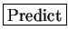
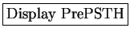

Next: Get PredFiles
Up: User Manual
Previous: Reference for STRFPAK's Modulation
Contents
In this toolbox, the Predict stage helps to see how well the estimated
STRF generalizes to new data. It uses the estimated STRF to predict new responses if
new stimuli are provided. Results will be saved for the
validation procedure later.
The current Predict stage includes three subsections:
-
 :
In order to avoid overfitting to noise, we provide this option so that
you can choose new data sets to do predication. Or if you want to use
the original data sets, the Jackknifed STRF will be used instead.
:
In order to avoid overfitting to noise, we provide this option so that
you can choose new data sets to do predication. Or if you want to use
the original data sets, the Jackknifed STRF will be used instead.
-
:
After you provide new stimulus data, clicking
begins
to compute the neuronal response.
-
:
This option plots the prediction input and prediction result on one
figure. It helps you clearly see how good the prediction is.
Subsections
2004-08-09